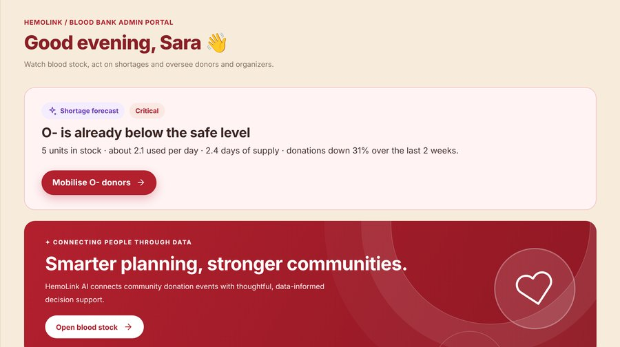
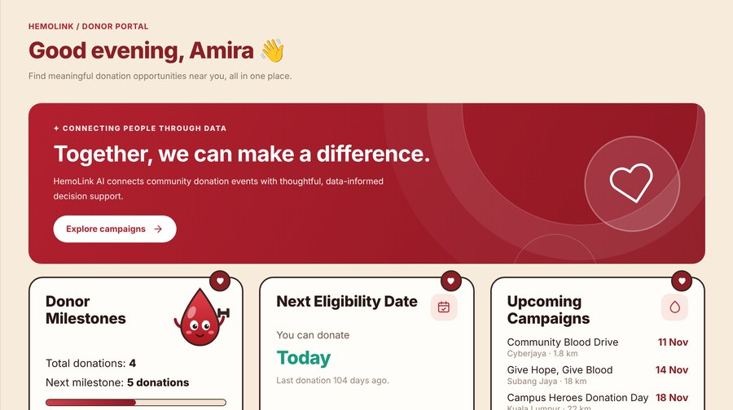
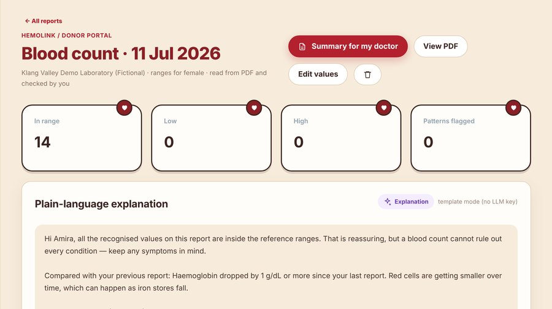

1 The problem
- Only 2.3% of Malaysians donate blood; the National Blood Centre (PDN) is aiming for 3%.
- Klang Valley hospitals need 600–700 bags a day, and red cells keep only 35–42 days (platelets 5), so collection can never pause.
- Shortages are noticed late, so blood banks send mass appeals that tire donors out. Many donors don't know if they're eligible and are turned away on the day.
2 Our solution
One web app (it also installs on phones) that links the three people a blood supply depends on. AI helps each of them decide earlier and better:
3 Key features
Shortage outlook AI
Forecasts donations and use for each of the 8 blood types and projects stock 7 days ahead. It warns which type will fall below the safe level, and why.
Smart donor matching AI
Ranks compatible, eligible donors by distance, past replies and recent alerts, then alerts only as many as needed (units × 1.5), not everyone.
Eligibility check AI
PDN's real rules decide: age 17–65, a 3-month gap for men and 4 for women, and 15 screening questions. The AI only explains the result, in English or Malay.
HemoScan AI
Reads a blood test PDF or photo. The donor confirms every value, then clear rules flag out-of-range patterns and trends. A guide to bring to the doctor, never a diagnosis.
Campaign map & planner
GPS distances to drives, organizers pin venues on a map, and the planner suggests the area and weekday with the most eligible donors.
Alerts that reach people
Alerts in the app, by email, SMS and phone push, with reminders the day before. The whole app works in English and Bahasa Malaysia.

Blood bank: O− flagged below the safe level → mobilise donors
Donor: milestones, next eligible date, drives nearby
HemoScan: values checked by the donor, explained in plain language4 How the AI was built and tested
- Real data: Ministry of Health daily donations, 2006–2026, for 14 regions (the latest 3 years are used for training). 70 region × blood-group series, each choosing the best of 3 methods by rolling cross-validation. 27% lower error than a simple "same day last week" forecast.
- Donor return model: predicts whether a donor will come back. AUC 0.85 (1.0 is perfect, 0.5 is guessing), checked 5 ways, and well calibrated (error 0.145 vs 0.213 for a basic guess).
- Fairness check: compares match rates across age groups and areas. Donors aged 45+ are picked a little less often (0.75–0.79 of the top group's rate). Age isn't scored; distance and donation history explain most of the gap, and admins can see this.
- Safety: rules make every decision and the language model only explains. Medical questions are filtered before they reach the AI, and every answer has a fallback that works without AI.
5 Trust, impact and next steps
- Privacy (PDPA 2010): consent is recorded, donors can download or delete their data, blood test files are encrypted, and organizers and admins can never see health data.
- Impact: fewer and better-targeted appeals, fewer donors turned away on the day, and shortages spotted days earlier.
- Next: pilot with a campus drive, connect real blood bank stock, add WhatsApp alerts, Chinese and Tamil.